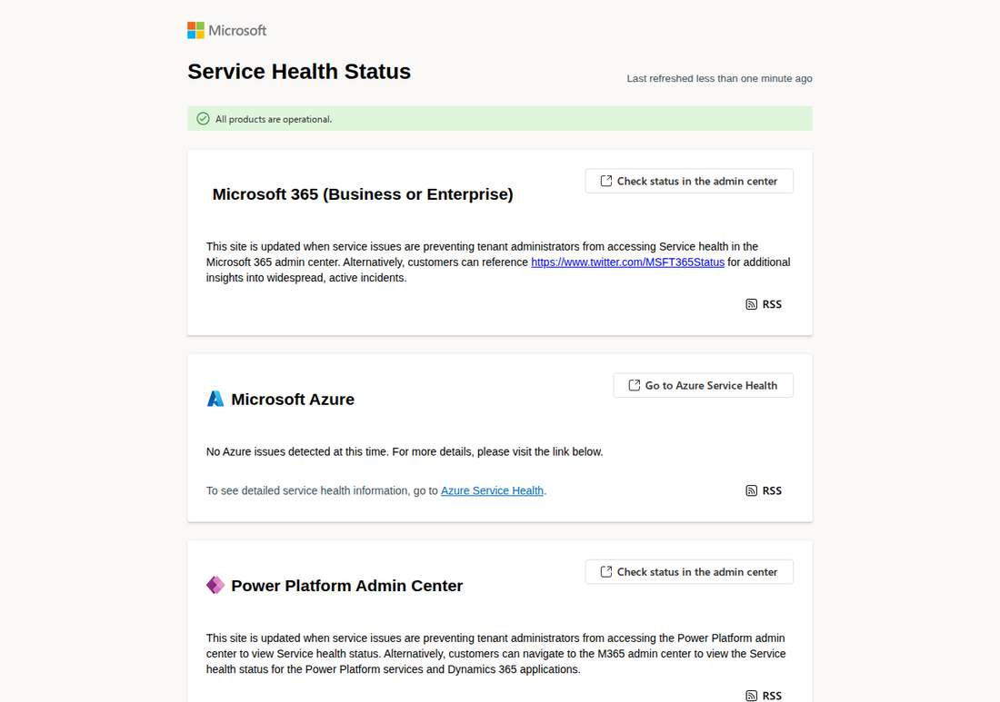

Microsoft 365 Final Report: Four Factors Behind the November 12 Outage; Fixes Run Into 2027
Update to flashes 331 through 354, 359, 360 and 383: Microsoft has published its final Post-Incident Report, dated November 20, 2026, for the Microsoft 365 outage of November 12 to 13. The 15-page report names four factors, where the preliminary report named three: a latent lock-contention defect from a July update to the networking gateway servers, nearly 14 percent of capacity out of service, a Teams failover at 01:07 UTC on November 12, and peak load, which the preliminary report had not named as a factor. Only newer, many-core servers were hit; lab testing missed the defect because it used older hardware. At its worst more than 80 percent of North American gateway servers were unresponsive, and the cascade crossed regions within about two hours. The outage was not a cyberattack, no mail was lost, and the change was not made by AI tooling. Repair items are complete; structural fixes run into the fourth quarter of 2026 and the first quarter of 2027, with several undated.

- 01THE REPORT — Microsoft has published its final Post-Incident Report, dated November 20, 2026, for the Microsoft 365 outage of November 12 to 13. The 15-page report, published to administrators through incidents MO1550821 and EX1550543, replaces the preliminary report of November 15 and closes the outage arc covered in flashes 331 through 354, 359, 360 and 383.
- 02THE CAUSE — The final report names four factors, where the preliminary report named three. The new fourth factor is peak load: broad failures began at about 16:00 UTC as US traffic approached its daily peak. Only newer, many-core servers were hit, and lab testing missed the defect because it used older hardware with fewer cores.
- 03THE IMPACT — At its worst more than 80 percent of North American gateway servers were unresponsive, and the cascade crossed regions within about two hours. Recovery required an update reverting the defective change, applied from 07:20 UTC on November 13; webmail was normal worldwide by 14:17 UTC. The outage was not a cyberattack, no mail was lost, and the change was not made by AI tooling.
WHAT HAPPENEDWhat Happened
Microsoft has published the final Post-Incident Report for the Microsoft 365 outage of November 12 to 13, dated November 20, 2026. The 15-page report, published to administrators through incidents MO1550821 and EX1550543, replaces the preliminary report of November 15 and closes the outage arc covered in flashes 331 through 354, 359, 360 and 383. It confirms the incident ran from 16:20 UTC on Thursday, November 12 to 16:10 UTC on Friday, November 13, and was declared resolved on Saturday, November 14 at 04:15 UTC.
The final report names four factors that combined to take down the networking gateway fronting Exchange Online and many other Microsoft 365 services, where the preliminary report named three. The new fourth factor is peak load: the first failures in North America came around the start of the business day on the US East Coast, and broad failures began at about 16:00 UTC as US traffic approached its daily peak. The other three factors are unchanged: a latent lock-contention defect in connection processing, introduced by an update to the Microsoft 365 networking gateway servers that began rolling out in July and ran worldwide for more than three months without visible problems; nearly 14 percent of gateway server capacity out of service for routine deployment work; and a Teams failover at 01:07 UTC on November 12, when a routing issue in the US East region moved Teams traffic onto the gateway shared with Exchange Online.
The report fills in why the defect stayed hidden and why the outage spread so fast. Only the newer server types were hit, because they have more cores and therefore more concurrent requests and more contention; the older generation was not affected. Normal load testing did not catch it because the test labs used older machines with fewer cores and different traffic conditions. When servers failed, automated traffic management moved users to healthy capacity units in the same region, which then took extra load and hit the same defect, and the cascade crossed regions within about two hours of the start in North America. At the lowest point more than 80 percent of North American gateway servers were unresponsive. Recovery was slow because servers coming back were immediately overwhelmed by waiting traffic and the automated recovery was not designed for such widespread failure, and because the defective change was months old, the usual safeguards of stopping a rollout, rolling back or switching off a new feature could not revert it. Engineers built an update that reverted the defective change and applied it to part of the capacity at 07:20 UTC on November 13, expanding it group by group; webmail was back at expected levels globally at 14:17 UTC. Microsoft confirms the outage was not a cyberattack, found no evidence of malicious activity, and states the change that caused the defect was not made by AI tooling. No mail was lost and all queued messages were delivered; Microsoft extended the email delivery retry window from 24 to 48 hours, and only delayed messages for consumer mailboxes inactive for more than 30 days expired, with senders receiving non-delivery reports. You do not need to change anything in your tenant.
WHY IT MATTERSThe containment question gets an answer, and it is not reassuring
The preliminary report left one question hanging: why the partition bulkheads between gateway capacity units failed to contain the cascade. The final report answers it, and the answer is structural. The gateway's traffic management treats a failed capacity unit as a routing problem, not a defect problem, so it kept handing the same poisoned traffic to healthy units until they failed the same way, then handed it to other regions, which had the same defect. The safety net assumed failures are independent; a latent defect that travels with the traffic is not. That is the difference between a bad day and a structural single point of failure, and it is now Microsoft's own finding rather than an outside inference.
The fix list makes the same point in the other direction. Every completed repair item is a reversion or a patch: the defective change reverted, the Windows image permanently updated, the delivery window extended, capacity added, monitoring and temporary guardrails in place. The structural work is all in the next-steps list, and it runs into the fourth quarter of 2026 and the first quarter of 2027, with several items undated: fixing traffic distribution so a cascade cannot cross regions, designing smaller fault zones, partitioning gateway capacity into pools that serve different workloads, scoping Teams failover to the affected region only, testing failover at peak conditions, and load-testing on the newest, highest-core hardware with production-representative traffic. Until that work lands, the gateway that took down Exchange Online for nearly a day is running with the same architecture and a reverted change.
WHAT TO WATCHWhat the final report settles, and what stays open
The final report settles the practical questions for customers that the preliminary report left open. No mail was lost, no customer data at rest was affected, and there is nothing for tenants to change, because the defect and the fix apply only to Microsoft's gateway servers. It also settles the cause: four factors, each normal on its own, that together exposed a latent defect, with the peak-load timing as the trigger the preliminary report had not named as a factor. Microsoft CEO Satya Nadella apologized to affected customers on November 20, according to Latin Times via Windows Forum.
What stays open is delivery. The next-steps list carries dates from the fourth quarter of 2026 to the first quarter of 2027, and five items have no date at all, including smaller fault zones, failover testing at peak conditions and gradual traffic ramp-up when servers rejoin service. Watch for Microsoft's confirmation that the traffic-distribution fix, due in the fourth quarter of 2026, has actually shipped, and for any further disclosure on the unrelated fault that took nearly 14 percent of gateway capacity offline the day before the outage, which the final report still does not name.
SIGNAL JUDGMENT — ANALYSISThe report is complete; the architecture it describes is not yet fixed
Tokenta Signal's judgment: the final report is the most complete account Microsoft has given of the November 12 outage, and it is more uncomfortable than the preliminary version. The defect hid for three months because the labs tested weaker hardware than the fleet runs, and then every resilience mechanism, failover, traffic redirection and partition bulkheads, carried the failure further instead of containing it. Microsoft is honest about the mechanics and about what remains undone. The reversion is complete, but the structural fixes, smaller fault zones, workload-isolated gateway pools, region-scoped failover, peak-condition testing, run into 2027 and several have no date. Until those ship, the gateway that took down Exchange Online for nearly a day is running the same architecture with a reverted change. That is the watch, not the apology.
WHAT REMAINS UNCERTAINWhat Remains Uncertain
EVIDENCEEvidence

Microsoft's final Post-Incident Report for the Microsoft 365 outage of November 12 to 13, 2026, dated November 20, 2026 and reproduced in full by 365Fanatic from the 15-page report published to administrators through incidents MO1550821 and EX1550543. The report names four factors: a latent lock-contention defect from a July update to the Microsoft 365 networking gateway servers, nearly 14 percent of gateway capacity out of service, a Teams failover onto the gateway shared with Exchange Online at 01:07 UTC on November 12, and peak load. At its worst more than 80 percent of North American gateway servers were unresponsive; the incident ran 16:20 UTC on November 12 to 16:10 UTC on November 13. Nerdism's November 21, 2026 update, citing Microsoft's final incident record, confirms the same cause, timeline and scope.
PRIMARY SOURCESPrimary Sources
- Microsoft Final Post-Incident Report (via 365Fanatic): Microsoft 365 outage 12 November 2026: final report
https://www.365fanatic.com/m365-outage-12-november-2026-final-report/ - Nerdism: Microsoft 365 Outage Explained (Nov 2026)
https://nerdism.com/microsoft-365-outage-november-2026-explained/ - Microsoft Service Health: Microsoft 365 outage status
https://status.cloud.microsoft